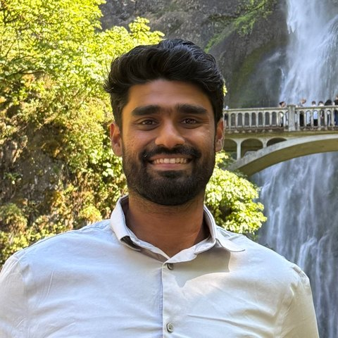

Syed Tousiful Haque
Ph.D. candidate in Computer Science, Texas State University
I work on human motion from two directions: generating it and recognizing it. On the generation side, I build text-to-motion models that turn a written prompt into 3D human motion. My current work is stylized text-to-motion that can mix styles from different reference motions across body parts. On the recognition side, I build models that learn from cameras and then run on a smartwatch, using cross-modal knowledge distillation and multi-sensor fusion that keeps working when a sensor goes missing.
Most of it is about fall detection for older adults: models that have to be accurate on noisy, real-world sensor data and fast on very small hardware.
Expected defense: April 2027. I’m looking for postdoctoral and research scientist roles in multimodal learning, efficient on-device AI, and human motion generation.
Research
Current work
I’m developing a text-to-motion method that lets a single generated motion mix styles from different reference motions, body region by body region. Existing methods describe style with one embedding for the whole body. My method instead extracts a style token for each of seven body parts and turns each token into a low-rank update that modulates only that part’s features inside a frozen, pretrained motion diffusion model.
Region-aware training losses and region-decoupled classifier-free guidance let the upper and lower body follow different references, for example an angry upper body over a penguin-like, wide-legged gait, while the frozen backbone keeps the whole body coordinated.
A camera-based 3D skeleton model recognizes activities well, but nobody wears a depth camera. I design distillation methods that transfer what a skeleton teacher has learned into a compact student that runs on inertial (IMU) data alone.
MAKD fuses skeleton and inertial streams in a shared feature space with a Cross-Modal Mixer and Gated Pool Fusion, then hands that knowledge to an IMU-only student for when no camera is available. It improves F1 by up to 7.85% on SmartFallMM and 8.65% on UP-Fall, and beats the state-of-the-art C2KD by 5.39% and 8.56%.
RightFeatKD aligns intermediate features of a skeleton Transformer teacher with a lightweight sensor student, weighting only the teacher’s correct predictions and using focal loss for noisy and hard samples. It gains 4.04% (SmartFallMM) and 12.59% (UP-Fall) F1 and beats four logit-based KD methods.
I deployed the distilled model in the SmartFall smartwatch app and tested it live with five participants. Against the non-distilled baseline it caught more than twice as many falls and cut false alarms on high-motion activities that look like falls.
I led the design and collection of SmartFallMM, a synchronized dataset from 51 participants aged 20 to 93 performing 14 activities. It pairs 32-joint 3D skeletons from Azure Kinect depth cameras with accelerometer and gyroscope signals from smartwatches, smartphones and wearable IMUs. I handled multi-device time alignment and data quality, and it is released as open source.
Publications
SmartFallMM: A Multimodal Dataset for Fall Detection Using Commodity Devices
S. T. Haque et al.
IEEE Sensors Journal Journal
RightFeatKD: Selective Feature-Based Knowledge Distillation
S. T. Haque, Y. Yan, A. H. H. Ngu
International Conference on Pattern Recognition (ICPR), Springer, pp. 649–661 Conference
A Survey on Multimodal Wearable Sensor-Based Human Action Recognition
J. Ni, H. Tang, S. T. Haque, Y. Yan, A. H. H. Ngu
IEEE Internet of Things Journal Journal
Dual-Stream Transformer with Kalman-Based Fusion for Wearable Fall Detection
A. Pradhan, S. Alamgeer, R. Suvvari, S. T. Haque, A. H. H. Ngu
Big Data and Cognitive Computing, 10(3) Journal
Enhancing Real-World Fall Detection Using Commodity Devices: A Systematic Study
A. Yasmin, T. Mahmud, S. T. Haque, S. Alamgeer, A. H. H. Ngu
Sensors, 25(17) Journal
LightHART: Lightweight Human Activity Recognition Transformer
S. T. Haque, J. Ni, J. Li, Y. Yan, A. H. H. Ngu
International Conference on Pattern Recognition (ICPR 2024), Springer, pp. 425–441 Conference
Experimental Study of Long Short-Term Memory and Transformer Models for Fall Detection on Smartwatches
S. T. Haque, M. Debnath, A. Yasmin, T. Mahmud, A. H. H. Ngu
Sensors, 24(19) Journal
Poster: Multimodal ConvTransformer for Human Activity Recognition
S. T. Haque, A. H. H. Ngu
IEEE/ACM Conference on Connected Health: Applications, Systems and Engineering Technologies (CHASE), pp. 206–207 Conference
Combined B-mode and Nakagami Images for Improved Discrimination of Breast Masses using Deep Learning
S. Muhtadi, S. T. Haque, C. M. Gallippi
IEEE International Ultrasonics Symposium (IUS), pp. 1–4 Conference
Experience
Doctoral Research Assistant
Multimodal human activity recognition and fall detection: dataset collection, cross-modal knowledge distillation, on-device deployment, and diffusion-based motion generation.
Doctoral Instructional Assistant
Taught and managed Programming for Scientists and Engineers (120 students), writing assignments and exams. TA for Computer Vision, where I designed and gave 5 lectures to about 60 students, and for Database Theory and Design.
Junior Software Engineer
Built dynamic web forms with conditional survey logic for the SurveyFlip platform in React, and integrated Stripe payment processing.
Education
Ph.D., Computer Science
Dissertation: Cross-Modal Knowledge Transfer for Human Activity RecognitionB.Sc., Electrical and Electronic Engineering
Thesis: Skin Lesion Detection using Convolutional Neural Networks
Awards and service
Graduate Research Award
Doctoral Retention Scholarship
Reviewer, ICPR 2025
Reviewer, Computer Vision and Image Understanding
Reviewer, IEEE Access
Reviewer, Discover Computing
Skills
- Research areas
- Multimodal learning, sensor fusion, knowledge distillation, edge AI, wearables, real-time systems, diffusion-based motion generation
- Frameworks
- PyTorch, TensorFlow, Keras, Hugging Face, OpenCV; pretrained models such as CLIP and VGG-16
- Languages
- Python, C, C++, MATLAB, R, JavaScript; OpenMP; Git
Contact
I’m happy to talk about research, collaborations, or open positions. Email is the best way to reach me.